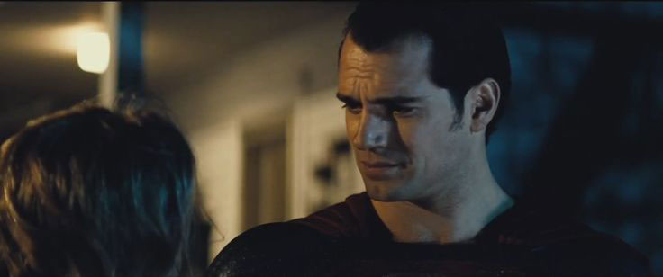

01. Batfleck
Despite what the rest of the internet has to say on the subject, I've always been a fan of Ben Affleck. I forgive him for the J-Lo phase (we all make mistakes), and he has certainly come a long way since 2003's Daredevil.
Against all odds, and a bevy of naysayers, everyone seems to agree, this just might be the greatest movie incarnation of Batman we have ever seen. Utterly menacing and brutally bad-ass, this is the first Batman that I truly fear, and I mean that in a good way. I mean seriously, would you want to run into this guy in a dark alley? ~ Shudder ~
02. Gal Gadot's Wonder Woman
Another casting choice that set the internet on fire, but she's sure done a 180, with early reviews hailing her as the best part of the movie, especially considering that she probably has a miniscule amount of screen time in comparison to her male superhero counterparts. I could write an entire article on why I think her casting alone is an important step forward for Hollywood, but I'll hold off on that till I've seen the movie. But rest assured, from what I've seen and heard so far, this woman is both beauty and beast in the best way possible.
03. Conflicted Superman
If I had to choose one thing that I liked about Man of Steel, I would say Henry Cavill. If I had to choose two, then it would be that the Superman of that movie was more humanized than anything I had seen before. He made mistakes, he ran away from his powers, and he had realistic human parents who mentored him in exactly the way we would expect our parents to treat us if we suddenly manifested superhuman strength; with caution. The world is a scary place, and humans tend to be the worst thing about it, so it makes sense for Superman, as an outsider, to be weary and conflicted about how he goes about things. BvS is poised to bring us more depth in that aspect.

04. The Lex Luthor of today

It seems like almost every casting decision in this movie has been met with trepidation, and Jesse Eisenberg as Lex Luthor is one that still hasn't proven itself to be bankable. But from what they've given us so far, it seems like this incarnation of the billionaire mastermind is moulded after what most modern billionaires look like today. Young, casual, socially awkward, unassuming enough that we would trust them with vast amounts of our personal information… remind you of anyone? (Zucker…cough). And if that's the case, then who better to play this new Luthor than the very actor who is renowned for portraying one of the real-life billionaire masterminds of our generation.
05. Action Action Action
Say what you want about Zach Snyder, but the man knows how to give us great action scenes. And from that Batman trailer sequence alone (you already know what I'm referring to, because yes it was that good), I think it's safe to expect beautiful and brutal action, which is what Zach Snyder excels at capturing (for evidence, see: 300).
06. Story, story, story
BvS is setting up to tackle some heady issues.

Balance of power
The consequences of conflict
Media bias
Government suspicion
Corruption of justice
Prejudice
Conspiracy theories
Faith in humanity as a whole
...just to name a few. Just to be clear, this movie has a flying alien, glowing meteorites, a genetic hybrid monster, and a grown man dressed as a bat. Throwing these real world topics into the mix is what will make the movie worth investing in emotionally.